2
初登場
▶
2
初登場
▶
Apex Legends: Cipher Gameplay Trailer
Apex Legends · 328,214再生 · 公開 10/30
2
初登場
▶
Apex Legends · 328,214再生 · 公開 10/30
 3
初登場
▶
3
初登場
▶
モンスト（モンスターストライク）公式 · 627,665再生 · 公開 10/29
 5
▼3
▶
5
▼3
▶
東宝MOVIEチャンネル · 748,848再生 · 公開 10/28
 6
▲11
▶
6
▲11
▶
レトルト · 558,731再生 · 公開 10/29
 8
初登場
▶
8
初登場
▶
長尾 景 / Nagao Kei【にじさんじ】 · 591,485再生 · 公開 10/29
 10
初登場
▶
10
初登場
▶
らっだぁ · 339,673再生 · 公開 10/29
 12
初登場
▶
12
初登場
▶
GON · 410,277再生 · 公開 10/29
 14
初登場
▶
14
初登場
▶
ドズル社 · 267,884再生 · 公開 10/29
 16
▼1
▶
16
▼1
▶
ウォーターチャレンジ · 199,383再生 · 公開 10/29
 18
▼15
▶
18
▼15
▶
Nintendo 公式チャンネル · 1,865,915再生 · 公開 10/28
 19
初登場
▶
19
初登場
▶
Spotted: Official YouTube Channel · 451,823再生 · 公開 10/28
 20
初登場
▶
20
初登場
▶
Noel Ch. 白銀ノエル · 867,204再生 · 公開 10/30
 21
初登場
▶
21
初登場
▶
NOT EQUAL ME ノットイコールミー 公式チャンネル · 58,138再生 · 公開 10/29
 22
初登場
▶
22
初登場
▶
Flare Ch. 不知火フレア · 142,649再生 · 公開 10/30
 24
初登場
▶
24
初登場
▶
がみくん · 261,236再生 · 公開 10/29
 25
初登場
▶
25
初登場
▶
1theK Live - 원더케이 라이브 · 127,168再生 · 公開 10/29
 26
初登場
▶
26
初登場
▶
からすまAチャンネル · 271,940再生 · 公開 10/29
 27
▼17
▶
27
▼17
▶
STARGLOW Official · 151,930再生 · 公開 10/28
 28
初登場
▶
28
初登場
▶
KH / Killin9Hit · 334,337再生 · 公開 10/29
 30
▼24
▶
30
▼24
▶
Watame Ch. 角巻わため · 580,090再生 · 公開 10/29
 32
初登場
▶
32
初登場
▶
ちろぴの · 177,338再生 · 公開 10/29
 34
初登場
▶
34
初登場
▶
令和ちゃんねる · 127,793再生 · 公開 10/29
 35
初登場
▶
35
初登場
▶
YOASOBI · 169,285再生 · 公開 10/29
 36
初登場
▶
36
初登場
▶
鈴原るる【にじさんじ所属】 · 113,832再生 · 公開 10/30
 38
初登場
▶
38
初登場
▶
シュート。 · 164,781再生 · 公開 10/29
 39
初登場
▶
39
初登場
▶
ME:I · 14,561再生 · 公開 10/30
 40
初登場
▶
40
初登場
▶
ちょぶり【イーフト解説】 · 184,944再生 · 公開 10/29
 41
▼23
▶
41
▼23
▶
鈴木ゆゆうた · 355,233再生 · 公開 10/28
 42
初登場
▶
42
初登場
▶
葉ちゅべ · 155,154再生 · 公開 10/29
 44
初登場
▶
44
初登場
▶
Riona Ch. 響咲リオナ - FLOW GLOW · 308,045再生 · 公開 10/29
 45
初登場
▶
45
初登場
▶
戦極MCBATTLE · 29,777再生 · 公開 10/29
 46
初登場
▶
46
初登場
▶
Koyori ch. 博衣こより - holoX - · 217,373再生 · 公開 10/30
 48
初登場
▶
48
初登場
▶
Pekora Ch. 兎田ぺこら · 462,544再生 · 公開 10/29
 50
初登場
▶
50
初登場
▶
ワイトのゲーム攻略所 · 77,063再生 · 公開 10/29
 1
→
▶
1
→
▶
HANA - Topic · 419,082再生 · 公開 10/29
 4
初登場
▶
4
初登場
▶
back number · 146,785再生 · 公開 10/29
 7
初登場
▶
7
初登場
▶
Genius · 48,025再生 · 公開 10/30
 9
初登場
▶
9
初登場
▶
加賀美 ハヤト/Hayato Kagami · 137,263再生 · 公開 10/29
 11
初登場
▶
11
初登場
▶
Gero Channel · 131,305再生 · 公開 10/29
 13
初登場
▶
13
初登場
▶
HYBE LABELS · 794,754再生 · 公開 10/29
 15
▼11
▶
15
▼11
▶
M!LK · 9,733,300再生 · 公開 10/26
 17
初登場
▶
17
初登場
▶
ONE OK ROCK - Topic · 18,488再生 · 公開 10/30
 23
▼16
▶
23
▼16
▶
VOLTACTION · 178,346再生 · 公開 10/28
 29
▼17
▶
29
▼17
▶
Radwimps - Topic · 297,343再生 · 公開 10/28
 31
▼17
▶
31
▼17
▶
MIMI · 285,388再生 · 公開 10/28
 33
初登場
▶
33
初登場
▶
CUTIE STREET · 39,061再生 · 公開 10/29
 37
初登場
▶
37
初登場
▶
Ave Mujica · 62,279再生 · 公開 10/29
 43
初登場
▶
43
初登場
▶
Watson · 42,944再生 · 公開 10/29
 47
▼25
▶
47
▼25
▶
suisoh - Topic · 24,693再生 · 公開 10/28
 49
初登場
▶
49
初登場
▶
高嶺のなでしこ Official · 37,101再生 · 公開 10/29
Yahoo!ニュース · 28 Oct · @sewcutekate ♥379,049
Yahoo!ニュース · 29 Oct · @yuliksvyazhet ♥1,116,287
 622万回
NEW
622万回
NEW
ねとらぼ · 29 Oct · @7kazoku_ ♥62,420
 330万回
NEW
330万回
NEW
Yahoo!ニュース · 29 Oct · @bygollymisterollie ♥265,677
 290万回
290万回
ねとらぼ · 28 Oct · @n.hawnyan ♥155,926
 227万回
NEW
227万回
NEW
Excite エキサイト · 29 Oct
au Webポータル · 28 Oct
ねとらぼ · 28 Oct · TikTok
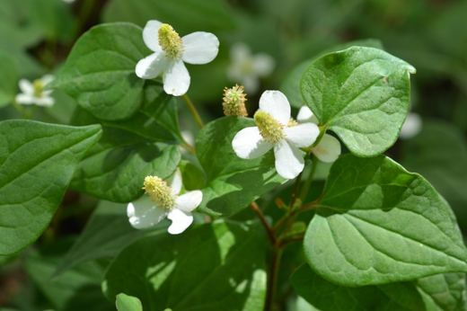
74万回 NEWｄメニューニュース · 28 Oct
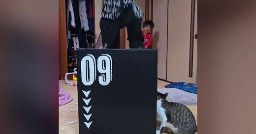
66万回 NEWExcite エキサイト · 28 Oct
千葉テレビ放送株式会社 · 28 Oct
ライブドアニュース · 29 Oct
千葉テレビ放送株式会社 · 28 Oct
ライブドアニュース · 28 Oct
ニコニコニュース · 28 Oct
 NEW
NEW
BuzzFeed · 29 Oct
ヨムーノ · 29 Oct
フクリパ · 29 Oct
TRILL【トリル】 · 29 Oct
 NEW
NEW
ニコニコニュース · 29 Oct
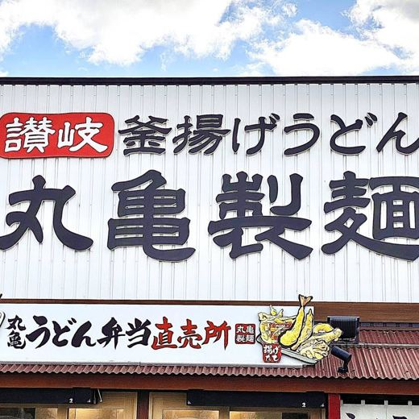
NEWTRILL【トリル】 · 29 Oct
au Webポータル · 29 Oct
Excite エキサイト · 29 Oct
オトナンサー · 29 Oct
Infoseek · 29 Oct
Yahoo!ニュース · 29 Oct
ライブドアニュース · 29 Oct
BuzzFeed · 29 Oct
ハフポスト · 29 Oct
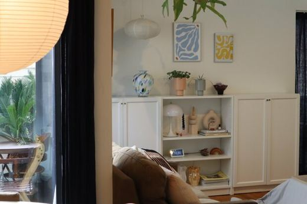
NEWライブドアニュース · 29 Oct
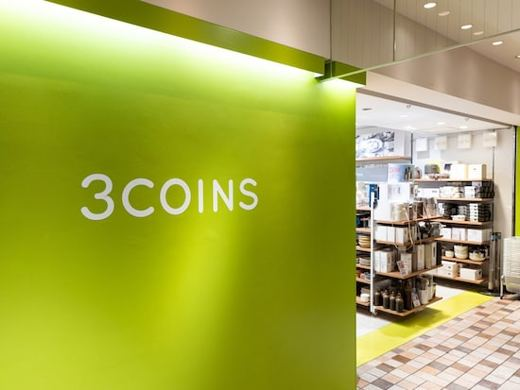
NEWInfoseek · 29 Oct
ライブドアニュース · 29 Oct
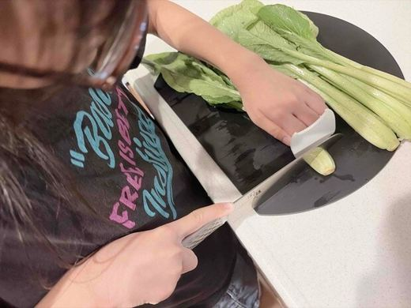
NEWライブドアニュース · 29 Oct
株式会社ホットランドホールディングスのプレスリリース ～ お好きなトッピング、期間限定商品も対象！全国の銀だこで “たこ焼（8個
 10/30 08:00
10/30 08:00
株式会社スタイリングライフ・ホールディングス プラザスタイル カンパニーのプレスリリース 2026年10月30日(金)～12月2
株式会社三福ホールディングスのプレスリリース 寒い季節にうれしい新商品が登場！冬ならではの楽しみを自動販売機からお届け 愛媛県松
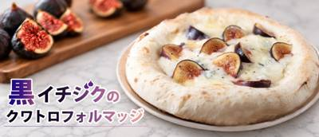
10/29 18:40株式会社リエイのプレスリリース 金沢発の冷凍ピザブランド「モリナポ」を製造・販売する株式会社森山ナポリ（本社：石川県金沢市、代表
PH PARIS JAPON 株式会社のプレスリリース ピエール・エルメ・パリは、2026年クリスマスコレクション「invisi
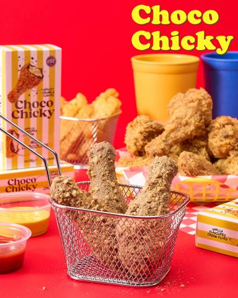
10/29 17:00株式会社スタイリングライフ・ホールディングス プラザスタイル カンパニーのプレスリリース 全国のPLAZA、PLAZA オンライ
株式会社Cake.jpのプレスリリース ケーキ・スイーツ専門通販サイト「Cake.jp（ケーキジェーピー）」を運営する株式会社C
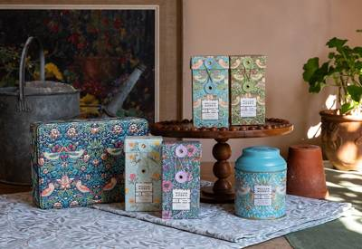
10/29 17:00株式会社グローバルプロダクトプランニングのプレスリリース ウィリアム・モリス・アットホーム ティーコレクション ウィリアム・モリ
株式会社愛しとーとのプレスリリース 「株式会社愛しとーと」（本社：福岡県那珂川市、代表：岩本初恵）が展開する「五ケ山豆腐 SOY
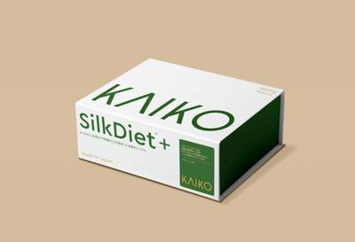
10/29 16:50Morus株式会社のプレスリリース 〜機能性関与成分イミノシュガー（届出番号L230）／1回3粒・食事の前に／桑の葉から製造まで
綿半ホールディングス株式会社のプレスリリース 株式会社綿半ホームエイド（長野県長野市 代表取締役社長：永岡幸春）は、綿半オリジ
バターが主役の冬の名品 フランス産A.O.P.認定発酵バター「エシレ」の専門店『エシレ・メゾン デュ ブール』では、毎年完売する
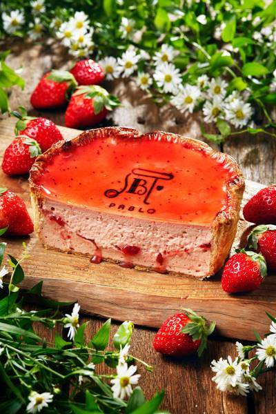
10/29 16:00株式会社ドロキア・オラシイタのプレスリリース PABLO いちごスムージー パブロとろけるいちごチーズタルト 焼きたてチーズタル
株式会社ケイシイシイのプレスリリース 小樽洋菓子舗ルタオ（株式会社ケイシイシイ、本社北海道千歳市）が展開する「ルタオパトス店」
株式会社亀屋万年堂のプレスリリース 株式会社亀屋万年堂（本社・工場：神奈川県横浜市都筑区 / 総本店：東京都目黒区自由が丘）は、
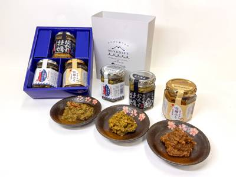
10/29 15:05末永海産株式会社のプレスリリース 第37回全国水産加工品総合品質審査会において。宮城県産牡蠣を使ったご飯のお供3品のセットが受賞
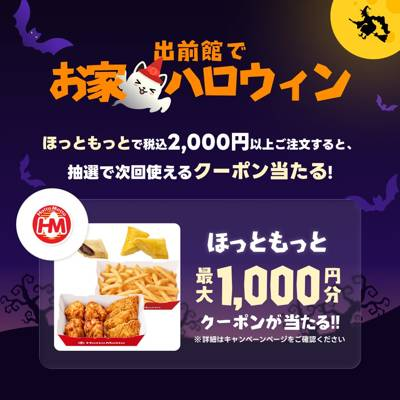
10/29 15:00株式会社プレナスのプレスリリース 10.30(金)～11.3(火)の期間開催 株式会社プレナスは、持ち帰り弁当の「Hotto M
ほっともっとのプレスリリース 株式会社プレナスは、持ち帰り弁当の「Hotto Motto (ほっともっと)」を、2026年9月末
株式会社フジノネ、いちごBonBon ATAMI HOUSE.のプレスリリース 熱海の“ビル一棟まるごと”いちごスイーツ専門店「
株式会社メリーチョコレートカムパニーのプレスリリース チョコレートをはじめとする贈答用菓子の製造、販売を手掛ける株式会社メリーチ
タリーズコーヒージャパン株式会社のプレスリリース ～限定ミニマグが付いた、季節限定コーヒースクールも開催します～ タリーズコーヒ
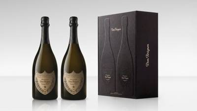
10/29 15:00モエ ヘネシー ジャパン株式会社のプレスリリース 2026年12月2日より限定発売開始 モエ ヘネシー ジャパン株式会社（東京都
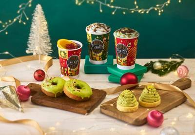
10/29 15:00タリーズコーヒージャパン株式会社のプレスリリース ～対象ドリンクと同時購入できる限定アイテムも発売～ タリーズコーヒージャパン株
一冨士ケータリング株式会社のプレスリリース 大阪府河内長野市の道の駅「奥河内くろまろの郷」では、このたび新商品となるサブレ「ムサ
株式会社シュクレイのプレスリリース 雪のように真っ白な、メープルスノーボール入りの限定品。クリスマスの季節にしか出会えない、スペ
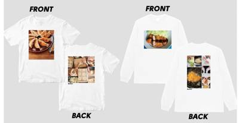
10/29 14:00株式会社オレンジページのプレスリリース 株式会社オレンジページ（東京都港区）が月2回（2、17日）発行する生活情報誌『オレンジペ
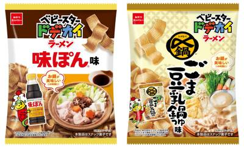
10/29 14:00株式会社Mizkan Holdingsのプレスリリース ～お鍋がおいしい季節に、人気の味が夢の初コラボ！～ 株式会社Mizka
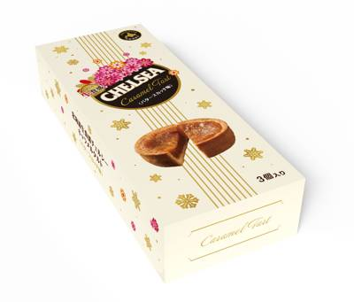
10/29 14:00道南食品株式会社(所在地：北海道函館市、代表取締役社長：和田 朝寛)は、“北海道生食感チェルシー”から新たなご褒美スイーツ「北海
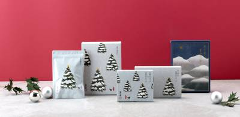
10/29 14:00株式会社久原本家のプレスリリース 久原本家グループ（福岡県糟屋郡久山町 社主：河邉哲司）は、「茅乃舎だし」など和風調味料を販売
アークランドサービスホールディングス株式会社のプレスリリース 定番の「豚ロース」のから、バラエティ豊かなアレンジ丼、具だくさん豚
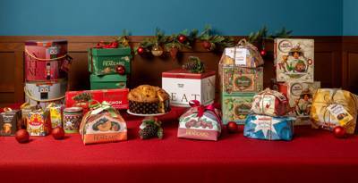
10/29 13:52イータリー・アジア・パシフィック株式会社のプレスリリース 全25種類ものパネットーネとパンドーロを揃えるイーターリーの商品ライン
株式会社 雅蜂園のプレスリリース ランナーが欲しい105kcalを、はちみつで。作り手の理想ではなく、使う人の声から生まれた新し
株式会社Cake.jpのプレスリリース 全国の生活雑貨専門店ロフト189店舗及び香港のロフトPOPUPSHOPにて展開。ショート
株式会社プレナスのプレスリリース 11.1(日)～30(月) 株式会社プレナスは、定食レストラン「やよい軒」を、2026年9月
公益財団法人岡山県産業振興財団のプレスリリース まだ広く流通していない商材や目新しい商材を扱う岡山県内事業者131者が出展します
株式会社白謙蒲鉾店のプレスリリース 混ぜて、のせて、楽しんで。おいしさ自由自在。簡単お手軽レシピのショート動画も同時公開 株式会
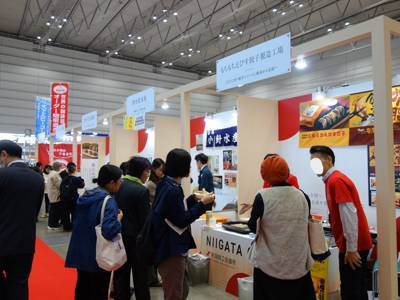
10/29 13:00新潟市のプレスリリース 新潟市などで組織するフードメッセ in にいがた運営会議は、食品関連事業者の販路開拓と新たなビジネス機会
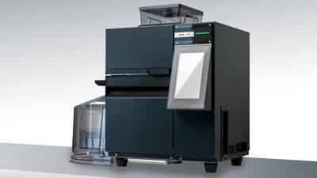
10/29 13:00株式会社ナサのプレスリリース 株式会社ナサが新たに展開する卓上型ドリップバッグ包装機、「tomte. DB1」が2026年12月
佐藤薬品工業株式会社のプレスリリース ～世界遺産「飛鳥・藤原の宮都」応援する会の推奨品に選出～ 佐藤薬品工業株式会社（本社：奈良
ベネリック株式会社のプレスリリース ※画像はイメージです。 株式会社ハル研究所と任天堂株式会社が開発し、任天堂株式会社が発売する
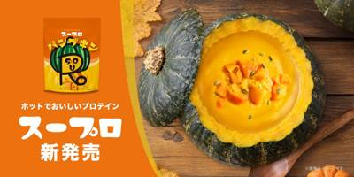
10/29 12:00株式会社FEEL CONNECTIONのプレスリリース 暗闇フィットネス®のパイオニア「FEELCYCLE（フィールサイクル）」
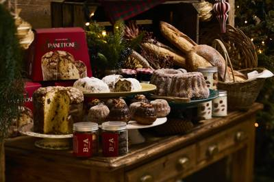
10/29 12:00株式会社ベイクルーズのプレスリリース オリジナルバンダナ付きシュトレンや、専用箱に入った本格パネトーネも登場 株式会社ベイクルー
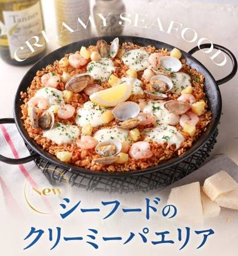
10/29 12:00株式会社フォーシーズのプレスリリース 期間限定 2026年11月4日（水）～ 株式会社フォーシーズ（本社：東京都港区南青山、代
株式会社Cake.jpのプレスリリース ケーキ・スイーツ専門通販サイト「Cake.jp（ケーキジェーピー）」を運営する株式会社C
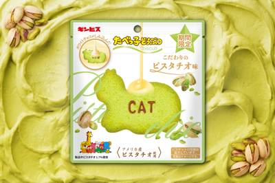
10/29 12:00株式会社ギンビスのプレスリリース ～11/2（月）より期間限定で販売～ ※ 画像はイメージです 株式会社ギンビス（本社：東京都中
オリオンビール株式会社のプレスリリース 12月1日（火）より通年販売開始
Mr.LAND株式会社のプレスリリース 中央南改札内に期間限定で登場。エキュート大宮限定アレンジのメキシカンサラダ、精進料理の精
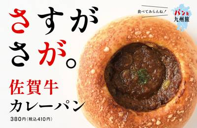
10/29 11:40株式会社アンデルセン・パン生活文化研究所のプレスリリース 佐賀牛の肉感と旨み、スパイスの香りを楽しむ“焼き”カレーパン 九州で展
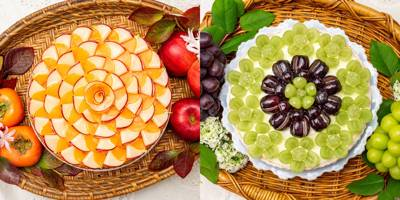
10/29 11:34キルフェボン株式会社のプレスリリース 2026年11月28日（土）より、新宿店限定で発売 タルト専門店「キル フェ ボン」を運営
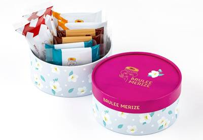
10/29 11:30株式会社グレープストーンのプレスリリース 2026年11月1日(日) BRULEE MERIZE 東京ギフトパレット店で販売開始
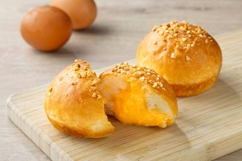
10/29 11:30国際興業株式会社のプレスリリース ピコット湯本駅前店 新商品登場！～地元食材の恵みを味わう贅沢なクリームパンの登場～ 国際興業グ
ハーゲンダッツ ジャパン株式会社のプレスリリース ～おいしさのヒミツと開発者インタビューを紹介～ ハーゲンダッツ ジャパン株
株式会社セブン‐イレブン・ジャパンのプレスリリース ～感謝を込めて、限定ステッカー&ペアグラスが当たるキャンペーンや初の
株式会社幸楽苑のプレスリリース 株式会社幸楽苑（本社：福島県郡山市）は、2026年11月4日（水）より、タイ幸楽苑10号店・1
株式会社セブン‐イレブン・ジャパンのプレスリリース ～全国のセブン‐イレブン店舗にて11月3日（火）より順次発売～ 株式会社セ
株式会社文明堂東京のプレスリリース 国産小麦でしっとりと焼き上げ、国産丸大豆醤油のコクを添えた生地。北海道産大納言小豆をじっくり
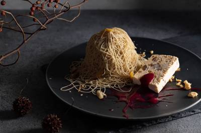
10/29 11:00エイムエンタープライズ株式会社のプレスリリース ＠和栗専門紗織 本店 この度、エイムインターセクション株式会社（エイムグループ本
株式会社ロイズコンフェクトのプレスリリース 株式会社ロイズコンフェクト(北海道札幌市)は、クリスマス限定商品を、2026年11月
株式会社サンマルクカフェのプレスリリース 株式会社サンマルクカフェ（京都本社：京都市下京区 代表取締役社長：小山典孝）は、チョ
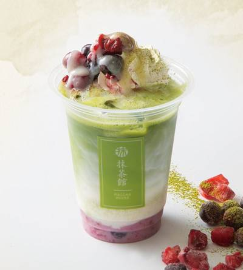
10/29 11:00株式会社クリエイト・レストランツ・ホールディングスのプレスリリース 京都の老舗茶舗「森半」の抹茶を使用した本格和スイーツ・ドリン
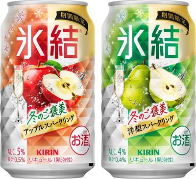
10/29 11:00キリンホールディングス株式会社のプレスリリース キリンビール株式会社（社長 堀口英樹）は、みずみずしい果実のおいしさをお届けす
ヤマダイ株式会社(本社：茨城県結城郡 代表取締役社長：大久保慶一)は、「ニュータッチ 凄麺 ねぎみその逸品うどん編」を2026年
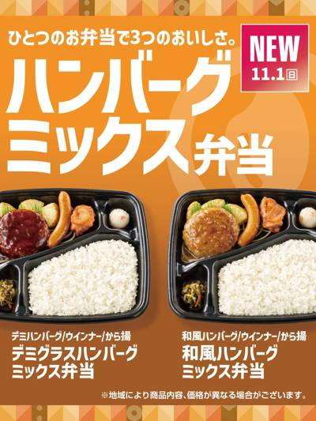
10/29 11:00株式会社プレナスのプレスリリース 11.1(日)より新発売 株式会社プレナスは、持ち帰り弁当の「Hotto Motto (ほっと
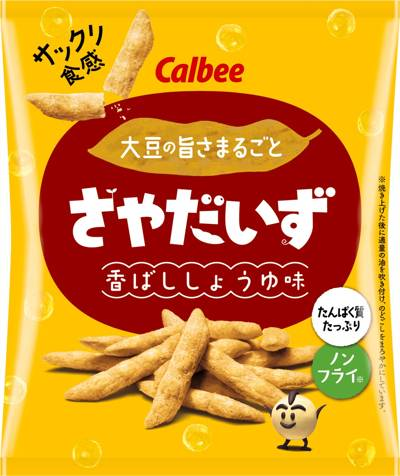
10/29 11:00カルビー株式会社のプレスリリース 2026年11月2日（月）から全国で発売 カルビー株式会社（本社:東京都千代田区、代表取締役社
ほっともっとのプレスリリース 株式会社プレナスは、持ち帰り弁当の「Hotto Motto (ほっともっと)」を、2026年9月末
横浜バニラ株式会社のプレスリリース ギネス世界記録™認定のフラッグシップ商品「塩バニラフィナンシェ」も進化 横浜発
小正嘉之助蒸溜所株式会社のプレスリリース 嘉之助コラボレーションシリーズKV 「MELLOW LAND, MELLOW WHIS
アイビーカンパニー株式会社のプレスリリース 全国のファミリーマートから、11月3日（火）新発売 アイビーカンパニー株式会社（本社
株式会社OSPホールディングスのプレスリリース バイオマス由来の顕色剤を使用した環境配慮型製品をセブン‐イレブン約300店舗で実
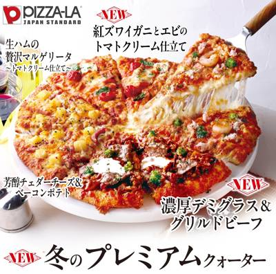
10/29 11:00株式会社フォーシーズのプレスリリース 2026年11月4日（水）～2027年3月2日（火） 株式会社フォーシーズ（本社：東京都
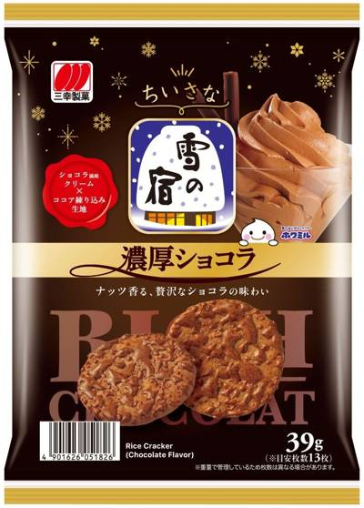
10/29 11:00三幸製菓株式会社のプレスリリース — 11月9日（月）より全国で順次発売 — 三幸製菓株式会社（本社：新潟市北区、代表取締役社長
株式会社プロントコーポレーションのプレスリリース 日本上陸30周年を迎える「ジョルジュ デュブッフ ボジョレー・ヌーヴォー」を
株式会社サンラヴィアンのプレスリリース 岡山の洋菓子メーカー サンラヴィアン 国産抹茶の豊かな風味と、しっとりミルクスポンジが織
株式会社セブン‐イレブン・ジャパンのプレスリリース ～弁当の一部に「Treeloop Thermal™」を採用 千
C-United株式会社のプレスリリース コロワイドグループのC-United株式会社（本社：東京都港区、代表取締役社長：友成
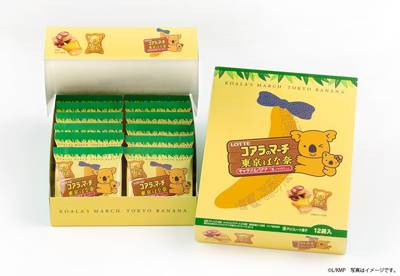
10/29 10:30株式会社グレープストーンのプレスリリース 2026年11月2日(月)より、JR東日本東京駅 グランスタ東京(改札内)にて発売 株
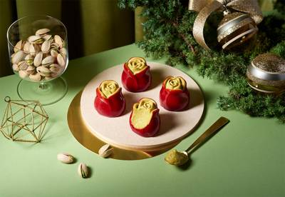
10/29 10:20株式会社グレープストーンのプレスリリース 株式会社グレープストーン(本社：東京都中央区銀座)のスイーツブランド「TOKYO TU
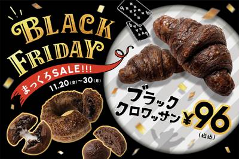
10/29 10:20株式会社オールハーツ・カンパニーのプレスリリース ～全国の「ハートブレッドアンティーク」「ベンケイ」店舗にて2026年11月20
株式会社ココウェルのプレスリリース 日本の伝統菓子「羊羹」に、ココナッツの新しい可能性を！専門店のこだわりが詰まった和スイーツで
白ハト食品工業株式会社のプレスリリース 「冬仕立てのとろけるチーズたこ焼」11月1日（日）全国発売 白ハト食品工業株式会社（本社
株式会社銀座コージーコーナーのプレスリリース 11月1日から期間限定販売！ 株式会社銀座コージーコーナー＜代表取締役社長 庄野和
株式会社ほっかほっか亭総本部のプレスリリース お肉好き必見！甘辛特製だれで牛肉と野菜を香ばしく炒めた本格派！お肉2倍の「肉倍盛」
株式会社きらくのプレスリリース 麻辣湯ブームのなか、焼鳥屋が提案する「みんなで囲む麻辣湯」とは？ 関西圏に飲食店を76店舗展開す
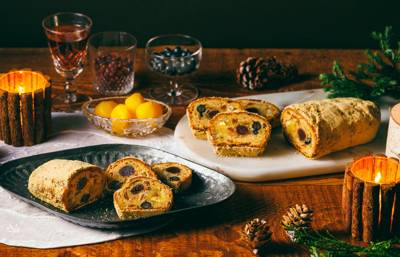
10/29 10:00株式会社木村屋總本店のプレスリリース 今年は手軽に楽しめる「小サイズ」が店舗限定で新登場 株式会社木村屋總本店（本社所在地：東京
株式会社ロッテのプレスリリース 株式会社ロッテ(東京都新宿区、代表取締役社長執行役員：中島英樹、以下ロッテ)は、ロングセラーブラ
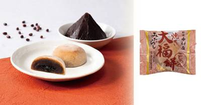
10/29 10:00株式会社 中村屋のプレスリリース 株式会社中村屋（本社：東京都新宿区、代表取締役社長 島田裕之、東証スタンダード：2204、以下
 10/29 10:00
10/29 10:00
有限会社ナチュラルスマイルのプレスリリース 秋のスマイルキャンペーン8品、サイドメニュー付き3品、新作10品のサイズ別価格と特典
株式会社ライフコーポレーションのプレスリリース “おいしい” “ワクワク” “ハッピー” をお届けするライフコーポレーションで
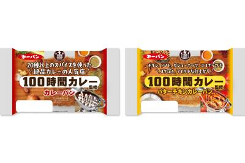
10/29 10:00第一屋製パン株式会社のプレスリリース 第一屋製パン株式会社（本社：東京都小平市、代表取締役社長：細貝 正統、以下：第一パン）と株
株式会社たらみのプレスリリース 冬に頑張るあなたを応援！冬にうれしい栄養成分とフルーツのおいしさをお届け 株式会社たらみ（所在地
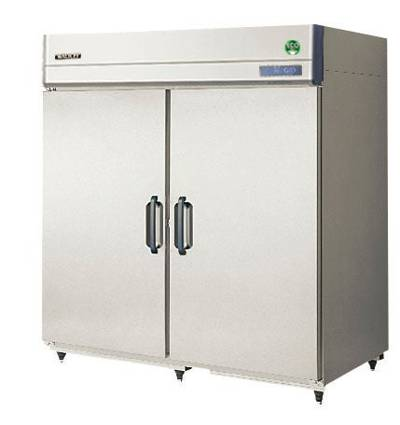
10/29 10:00ガリレイホールディングス株式会社のプレスリリース フクシマガリレイ株式会社(本社：大阪市西淀川区、代表取締役社長 福島 豪)は、
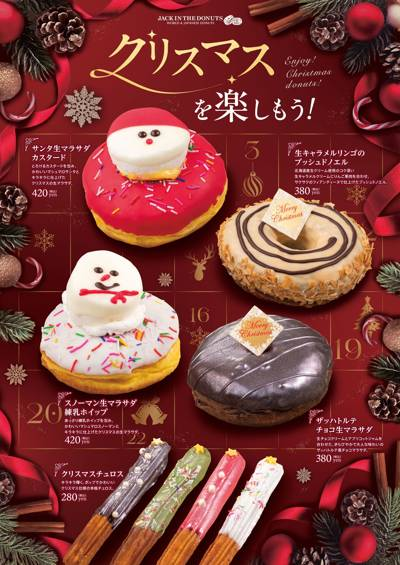
10/29 10:00ビッグクリエイト株式会社のプレスリリース 日本発・世界のドーナツ専門店『JACK IN THE DONUTS』が、クリスマスドー
株式会社バンダイ キャンディ事業部のプレスリリース ～ヤミつき濃厚味とまらない！？～ 株式会社バンダイ キャンディ事業部は、人気
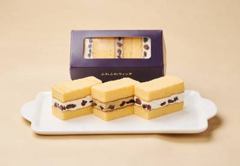
10/29 09:30有限会社ケイワンのプレスリリース 11月1日よりキュービックプラザ新横浜店限定販売！香り豊かなラムレーズンと、ほろ苦いコーヒーの
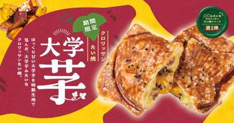
10/29 09:01株式会社ホットランドホールディングスのプレスリリース ～鳴門金時使用の「芋あん」と、黒ごまと甘蜜ダレを絡めた「大学いも」の味わい
株式会社おやつカンパニーのプレスリリース ミツカンの大人気商品「味ぽん」「〆鍋」がカリッとクリスピー食感のベビースターになった！
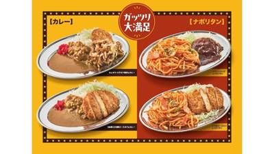
10/29 14:00株式会社JR東日本クロスステーションのプレスリリース 株式会社JR東日本クロスステーション フーズカンパニー(所在地:東京都渋
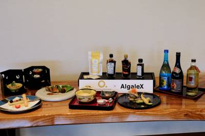
10/29 12:00株式会社AlgaleXのプレスリリース ロワジールホテル 那覇の中華料理長 三澤陽一氏が、前菜からデザートまでうま藻を使用。塩分
株式会社 Ts&8のプレスリリース 恵比寿本店・日比谷OKUROJI店で親しまれてきたメニューも加わり、そうめんの楽しみ
株式会社モンテローザのプレスリリース 「白木屋」「魚民」「笑笑」などを全国に展開する株式会社モンテローザ（本社：東京都杉並区、
株式会社キープ・ウィルダイニングのプレスリリース つくい城の里「煮込み屋 炎家」で、地域の歴史を味わう新メニューが登場。古民家で
株式会社ぐるなびのプレスリリース 人数×最大400ポイント進呈や最大10,000円OFFクーポンでお得な忘年会を！ <開催
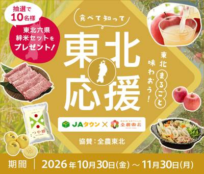
10/29 15:00全国農業協同組合連合会のプレスリリース ＪＡ全農は、産地直送通販サイト「ＪＡタウン」において、１０月３０日（金）～１１月３０日
株式会社カカクコムのプレスリリース お店を訪れた「あなたの一票」で決まる「美味しい」の最高峰 – 日本全国からきわめ
白鶴酒造株式会社のプレスリリース ～11月1日から12月31日までWebで実施～ 白鶴酒造株式会社は、「お買い物レシート合計金額
株式会社エスワイフードのプレスリリース 株式会社エスワイフード（本社：愛知県名古屋市、代表取締役：山本久美）は、11月3日（火
ロイヤルホールディングス株式会社のプレスリリース ロイヤルグループが展開する「ロイヤルホスト」は、2026年10月下旬より店舗
 10/29 12:00
10/29 12:00
株式会社Bull Puluのプレスリリース 11月12日(木)12:00～12月13日(日)まで、BullPulu32店舗にてコ
伊藤ハム米久ホールディングス株式会社のプレスリリース 子どものお迎えから夕食開始まで中央値2時間！未就学児のいる共働き世帯500
株式会社ビーケー・ジャパンのプレスリリース 【１日限定・時間限定・各店舗先着30名様限定】10月31日（土）14:00～18:0
コアグローバルマネジメント株式会社のプレスリリース 源泉大浴場「青野」 コアグローバルマネジメント株式会社が運営する「源泉一途
Retty株式会社のプレスリリース 実名口コミのグルメ情報・予約サイト「Retty（レッティ）」を運営するRetty株式会社（本
株式会社 美十のプレスリリース ～atelier京ばあむの開業日にちなみ制定。11月10日～12日の3日間、atelier京ばあ
株式会社JR東日本クロスステーションのプレスリリース 株式会社JR東日本クロスステーション フーズカンパニー（所在地：東京都渋
宇部市のプレスリリース 新鮮な魚、上質な肉。宇部のおいしさが一堂に 山口県では、10月より、山口デスティネーションキャンペーン
ジェイアール東海フードサービス株式会社のプレスリリース 2026年10月29日（木）15：00より「JR東海MARKET」プロジ
みのりみのるプロジェクトのプレスリリース ＪＡ全農は、宮城県の直営飲食店舗「みのりカフェ・グリルみのるエスパル仙台店」で、１１
ファーストキッチン株式会社のプレスリリース ～来年4月の消費減税見据え 東京、埼玉、千葉、神奈川、愛知の5地域で～ ウェンディー
株式会社当間高原リゾートのプレスリリース 2026年11月26日～2027年3月3日、八海醸造のお酒や麹の調味料を生かした期間限
株式会社日と々とのプレスリリース 2026年10月30日(金)から、関東・関西の「パンとエスプレッソと」系列の16店舗で、ドラマ
株式会社ベイクルーズのプレスリリース 株式会社ベイクルーズ（本社: 東京都渋谷区、取締役社長: 古峯 正佳）が運営する、アメリカ
株式会社にんべんのプレスリリース 株式会社にんべん(東京都中央区、代表取締役社長 髙津伊兵衛)は、塩山食品株式会社（熊本県玉名郡
HARNEY & SONS（株式会社メディカ・ライン）のプレスリリース 人気フレーバーを詰め合わせた「ティー・セレクショ
株式会社ホライズン・ホテルズのプレスリリース ANAクラウンプラザホテル福岡（福岡市博多区 総支配人：柴山彰）では、「2026ク
ゼスプリ インターナショナル ジャパン株式会社のプレスリリース ゼスプリ インターナショナル ジャパン株式会社（本社：東京都港
アークランドサービスホールディングス株式会社のプレスリリース 新登場「からチキ」やハーブポテト、食後の揚げパンまで贅沢な盛り合わ
株式会社ドロキア・オラシイタのプレスリリース 秋の香りを食べる、新しいスイーツ体験。キンモクセイと抹茶が織りなす、11月だけのチ
GYRO HOLDINGS 株式会社のプレスリリース 「おかか」と「肉の寺師」がもつ鍋でコラボ。おかか自慢の「追い鰹」で極上のも
ウェルネスダイニング株式会社のプレスリリース ～人気具材を集めた“夢の鍋”を管理栄養士が100点満点で採点！ダイエット・満足感・
 10/30 08:00
10/30 08:00
BOC Japan合同会社のプレスリリース 「銀座 台楽蛋糕(タイラクタンガオ)」2026年10月31日－11月1日まで、西武秋
株式会社榮太樓總本鋪のプレスリリース 星に願いを2026 ——クリスマスを彩る小さな贈り物—— 株式会社榮太樓總本鋪(本社：東京
株式会社ホライズン・ホテルズ 金沢ホテル事業所のプレスリリース 金沢の冬のごちそうを五感で味わう贅沢な会席 「極上の味わい 蟹づ
株式会社オイシルのプレスリリース ― 生鮮業界特化の人材事業と、80年以上にわたる干物の加工技術を融合する事業承継型M&
株式会社ケイシイシイのプレスリリース 幅広い世代が訪れる銀座三越では、ピスタチオスイーツ専門店ならではの緑鮮やかなスイーツをご用
ホリイフードサービス株式会社のプレスリリース ～インバウンド事業の拡大、既存店の収益改善、AI・DX、M&Aなど、202
株式会社ＢＳ日テレのプレスリリース １１月２日（月）よる１０時～放送「ドランク塚地のふらっと立ち食いそば」～東京・池尻 粘り強い
日本投資機構株式会社のプレスリリース 投資情報メディア「InvestLeaders」が藤田明久社長・高鍬仁一取締役を取材。接客・
株式会社Merciのプレスリリース 土佐紅金時・紅はるか、2つのさつまいもの個性を生かした期間限定パン4種が登場 株式会社Mer
 10/29 17:26
10/29 17:26
ダイコク電機株式会社のプレスリリース 当社の関連会社である株式会社七葉（本社：東京都目黒区、代表取締役社長：朽網一人、以下「七葉
ダイコク電機株式会社のプレスリリース 当社の関連会社である株式会社七葉（本社：東京都目黒区、代表取締役社長：朽網一人、以下「七葉
株式会社JR西日本ホテルズのプレスリリース わくわくをシェアする、心ときめくホールケーキ4種 ホテルグランヴィア和歌山（和歌山県
特定非営利活動法人支援センターあんしんのプレスリリース はざ掛けの「天日干し魚沼産コシヒカリ」～荒地を復田して６年目の新米は自信
ウッドデザインパーク株式会社のプレスリリース 愛知県でグランピング施設を中心に展開するウッドデザインパーク株式会社が手がける屋内
株式会社おもちゃ箱のプレスリリース 人気の「クリスマスカウントダウンのお茶」から、幸運のモチーフをあしらった「ハッピーフォーチュ
株式会社LIBERTE JAPONのプレスリリース ～ 予約受付開始：11月1日(日)、引渡し期間：12月23日(水)～25 日
株式会社シンクロ・フードのプレスリリース 食品・農業分野特化の求人情報サイト「農業ジョブ」を運営する株式会社シンクロ・フード（本
株式会社エー・ピーホールディングスのプレスリリース 鶏を知り尽くした塚田農場だからこそできる地鶏・銘柄鶏・若鶏を多彩なメニューで
テーブルマーク株式会社のプレスリリース ー デジタル技術による省人化と環境対応を進める、テーブルマークの新たな生産拠点 － テー
株式会社アーシュ・ツジグチのプレスリリース ペルーの自社農園から生まれたタブレットショコラも、ゴールドタブレットを受賞！ パティ
ＳＤＲＳ株式会社のプレスリリース ＳＤＲＳ株式会社（本社：東京都墨田区、代表取締役社長：森益哉）は、独自開発の抽出システムを搭載
有限会社山城屋のプレスリリース ～日本生まれの品種「満天きらり」を100％使用～ 報道関係者各位2026年10月29日有限会社山
リボン食品株式会社のプレスリリース 日本初・京都発のバブカ専門店「BABKA cadabra（バブカカダブラ）」（リボン食品株式
株式会社成城石井のプレスリリース ～今年の福袋限定、新色カラーの「成城石井 ショッピングバッグ」もご用意～ 株式会社成城石井（本
株式会社ピー・エス・コープのプレスリリース 秋の味覚「ラ・フランス」や「シャインマスカット」を贅沢に使用したショートケーキやタル
キユーピー株式会社のプレスリリース 「たまご白書」から紐解く『食卓と卵の10年』 キユーピー株式会社（本社：東京都渋谷区、代表取
敷島製パン株式会社のプレスリリース ～欧風パンから食事パン・スイーツまで。「おうちで楽しむ、本格派焼きたて冷凍パン」をあらゆる食
株式会社ハナフルのプレスリリース ～大阪・本町「hanafru/FRUiT 御堂筋店」では、季節のフルーツ食べ放題「FRUiT
株式会社あるやうむのプレスリリース 冬の観光客誘致狙い10月29日から各限定30口、TOKKENで販売 株式会社あるやうむ（本社
塩山食品株式会社のプレスリリース 塩山の南関あげ3種類を販売！さらに、店頭で南関あげとにんべんのだしや調味料を使った料理のレシピ
株式会社ロイヤルホテルのプレスリリース 約5万球のイルミネーションがホテル前庭を彩り、幻想的なクリスマスを演出 リーガロイヤル
株式会社ニューオータニ九州のプレスリリース 熊本県産和栗「利平」のモンブランやご当地グルメ「太平燕」など、熊本の豊かな食材を生か
株式会社 活美登利のプレスリリース 株式会社活美登利（本社：東京都品川区、代表取締役社長：土屋秀仁）が運営する「回し寿司 活／寿
 10/29 14:10
10/29 14:10
豆腐・納豆コスト指標作成協議会のプレスリリース ～豆腐・納豆のコスト指標を発信する公式ホームページも同日開設～ 豆腐・納豆コスト
RX Japan合同会社のプレスリリース 「HITEC® TOKYO」を日本初開催！世界基準の知見と、宿泊・飲食・観光業界を支え
株式会社木曽路のプレスリリース ～てっさやふぐ唐揚げ、ひれ酒など、冬を彩る多彩な料理もご用意～ 株式会社木曽路（本社：愛知県名古
クリスピー・クリーム・ドーナツ・ジャパン株式会社のプレスリリース ～愛犬と一緒にドーナツタイムを楽しめる特別セットも～ クリス
九州旅客鉄道株式会社のプレスリリース JR 九州フードサービス株式会社では、2026 年10 月30 日（金）より、新幹線荷物
株式会社物語コーポレーションのプレスリリース 株式会社物語コーポレーション(本社:愛知県豊橋市/代表取締役社長:加藤 央之)が全
株式会社ドトールコーヒーのプレスリリース ～「インスタントカフェオレに関する意識調査」を実施～ 株式会社ドトールコーヒー（本社：
株式会社大庄のプレスリリース 株式会社大庄（東京都大田区／代表取締役社長：平 了壽）は、全国の板前がいる町の酒場『庄や』83店舗
株式会社クリエイト・レストランツ・ホールディングスのプレスリリース 中とろ・うに・タラバ蟹まで全部食べ放題! 上野に誕生した“海
株式会社愛知国際アリーナのプレスリリース IGアリーナを運営する株式会社愛知国際アリーナは、名古屋ダイヤモンドドルフィンズ株式
株式会社ケイシイシイのプレスリリース 今回の出店では、そごう・西武グループでしか味わえない特別開発の限定パルフェが実演販売で登場
株式会社キングファクトリーグループのプレスリリース オフィス街・西天満に新店舗。広島発の「汁なし担担麺」を大阪でさらに広げる 株
株式会社ホットランドホールディングスのプレスリリース ～ ごはんだけじゃない！2種の味噌汁・キャベツ・3種の漬物もおかわり自由！
株式会社JR西日本ホテルズのプレスリリース 黒毛和牛や希少なオマールブルー、伊勢海老を堪能する「鉄板焼」 コース仕立てで楽しむ「
熊本大学大学院・倉内祐樹氏「AI時代こそ、意識して“ととのう”時間を」 片岡物産株式会社（本社：東京都港区新橋、代表取締役社長
アイコニア・ホスピタリティ株式会社のプレスリリース ホテルマイステイズ札幌駅北口（所在地：北海道札幌市北区）は、2026年11
株式会社 大丸松坂屋百貨店のプレスリリース ■11月4日(水)→17日(火) ■地階食品フロア「ごちそうパラダイス」 選ぶ楽しさ
株式会社グランビスタ ホテル＆リゾートのプレスリリース 出来立て熱々の実演スイーツも。 URL：https://grand193
 10/29 13:00
10/29 13:00
株式会社七葉のプレスリリース 株式会社七葉（本社：東京都目黒区、代表取締役：朽網一人）が展開する「nana’s gr
SOEL株式会社のプレスリリース ～外食5業態・全国2,000人調査 ─ カフェ・ラーメン・ファミレス・寿司では約半数が何も調べ
株式会社パルコのプレスリリース 株式会社パルコ（本部：東京都渋谷区、以下パルコ）は、IPX(LINE FRIENDS本社名)とG
株式会社焼肉坂井ホールディングスのプレスリリース ～ 旬な美味しさを揃えた忘年会シーズンのおすすめ10メニューが登場！～ 東京と
 10/29 12:42
10/29 12:42
株式会社焼肉坂井ホールディングスのプレスリリース ～ 旬な美味しさを揃えた忘年会シーズンのおすすめ10メニューが登場！～ 東京と
 10/29 12:39
10/29 12:39
株式会社焼肉坂井ホールディングスのプレスリリース ～ 旬な美味しさを揃えた忘年会シーズンのおすすめ10メニューが登場！～ 「ちゃ
Agro Ludens株式会社のプレスリリース アジア太平洋の食品共創プログラムで米由来マイコプロテインの次世代ヘルシースナック
株式会社モンテローザのプレスリリース リニューアルオープンを記念して、2日間限定で店内ご飲食にかぎり“全品半額のオープンセール”
株式会社モンテローザのプレスリリース リニューアルオープンを記念して、2日間限定で店内ご飲食にかぎり“全品半額のオープンセール”
東急ホテルズ＆リゾーツ株式会社のプレスリリース 提供期間：2026年11月10日（火）～2026年12月30日（水） 濃厚なソー
株式会社麺食のプレスリリース ～ポイントの交換やオリジナルコンテンツで更にお得に＆楽しく～ 「喜多方ラーメン坂内」をはじめ国内外
協同組合宇都宮餃子会のプレスリリース 年に一度の宇都宮餃子ファンへの感謝祭 「宇都宮餃子祭り2026」を、 11月7日(土)・
サトウ食品株式会社のプレスリリース ～連日予定数量を完売、最大約30名の行列も～ サトウ食品株式会社は、2026年9月30日（水
株式会社すかいらーくホールディングスのプレスリリース 株式会社すかいらーくレストランツ（本社･東京都武蔵野市、代表取締役社長
株式会社 資生堂パーラーのプレスリリース 公式サイト：https://parlour.shiseido.co.jp/ 「資生堂パ
ネッスー株式会社のプレスリリース ネッスーとプレナスの連携プロジェクト。第I期の約1.1万枚に続き、11月から第II期として約1
貝印株式会社のプレスリリース ―「環境フェアせき2026」で市民の皆さまに80個を配布― グローバル刃物メーカーの貝印株式会社
丸大食品株式会社のプレスリリース 「食を通じて人と社会に貢献する企業」を目指す総合食品メーカー 丸大食品株式会社（本社:大阪府高
ANAクラウンプラザホテル秋田のプレスリリース 〜毎月テーマが変わる”秋パフェシリーズ”第3弾〜 この度、ANAクラウンプラザホ
株式会社ゴンチャ ジャパンのプレスリリース 茶こし付きマグやTEACRAFTティーバッグアソート、約6,000円相当のドリンクT
株式会社東武ホテルマネジメントのプレスリリース 東武ホテルのパティシエが試作を重ねて作り上げた、こだわりの冷凍チーズケーキ 株
ヒューリックホテルマネジメント株式会社のプレスリリース 清らかな水と米づくりの風土が育んだ、新潟の豊かな食材と食文化。中国料理と
株式会社シティコミュニケーションズのプレスリリース 北欧の冬をテーマに、イチゴやベリーをふんだんに使用した手作りスイーツとセイボ
心幸ホールディングス株式会社のプレスリリース 11月18日～20日、インテックス大阪で開催｜食事環境の充実から健康づくりまで、職
株式会社ピエトロのプレスリリース “しあわせ、つながる”をテーマにピエトロスタッフのアイディアをお客様へ 株式会社ピエトロ(本社
株式会社グレープストーンのプレスリリース 2026年11月1日(日)～VERY RUBY CUT エキュート品川店で予約受付開始
株式会社Coxinのプレスリリース 和牛を“産地や銘柄”だけでなく“育てた農家”で選ぶ時代へ。和牛オリンピック日本一の「うしの中
株式会社JR西日本ホテルズのプレスリリース 販売期間：2026年11月1日(日)～2027年1月31日(日)／利用期間：2027
株式会社菓匠三全のプレスリリース チョコ味の萩の月「萩の調」を 11/5（木）～11/9（月）の5日間、JR仙台駅で先行販売！
ONODERA GROUPのプレスリリース ONODERA GROUP（グループ代表CEO：小野寺 裕司 所在地：東京都千代田区
マレーシア政府観光局のプレスリリース 大阪・関西万博で活躍したメンバーを含む民族舞踊団も来日 マレーシア政府観光局ブースには現地
株式会社パンフォーユーのプレスリリース 4,700円相当の冷凍パンセット、2026年10月29日（木）10時から交換受付開始
株式会社Mizkan Holdingsのプレスリリース ～きっかけ2位は「好きなものを食べたい」、低頻度層は「失敗しにくさ」を重
株式会社クリエイト・レストランツ・ホールディングスのプレスリリース 株式会社クリエイト・レストランツ・ホールディングスのグループ
株式会社 グローバルエージェンツのプレスリリース 株式会社グローバルエージェンツ(本社:東京都渋谷区、代表取締役:山﨑剛)は、全
鴻池運輸株式会社のプレスリリース 安全の意識・知識・技術を高めて事故撲滅へ KONOIKEグループの各拠点から選出された代表者選
株式会社KOZOUのプレスリリース 10月30日（金）～11月1日（日）、各日先着50名様に進呈 株式会社KOZOU（大阪府大阪
株式会社 赤福のプレスリリース 2026年11月4日（水）から11月17日（火）まで、本館地階 和菓子売場「四季催事」コーナーに
合同会社横浜ピア8ホスピタリティのプレスリリース プリザーブドフラワーが彩るテーブルで、スイーツからセイボリーまで、いちごの世界
株式会社モーリのプレスリリース 人気の魚介のドリアを味わう5,000円のコースから、国産牛サーロインステーキと真鯛のポワレを楽し
株式会社ウインズジャパンホールディングスのプレスリリース 「二代目一幸舎 さんすて岡山店」と「幸ちゃんラーメン イオンモール倉敷
株式会社壱番屋のプレスリリース －10月29日よりアンバサダー山田裕貴さん出演のWEB CM「今年も、あったまロー。」編を公開－
株式会社フクナガのプレスリリース 株式会社フクナガ(本社：京都市中京区)が運営する『炭火串焼き 串くら本店』は、2026年10月
株式会社お亀堂のプレスリリース 鬼まんじゅう・みたらし団子・お赤飯も増量し、焼き立て・蒸したての実演販売から60分食べ放題の「あ
株式会社物語コーポレーションのプレスリリース 全国で372店舗を展開する『焼肉きんぐ』は、オリジナルコンテンツ『おなかがぐ〜ぐ〜
株式会社SUISO JAPANのプレスリリース 独自の水素溶解技術を活かし、新たな農業作法として展開へ。 水素吸入器・水素風呂を
ジェイアール東海フードサービス株式会社のプレスリリース 2026年11月26日(木)・27日(金)の2日間限定！アスティ静岡にて
株式会社クリエイト・レストランツ・ホールディングスのプレスリリース 株式会社クリエイト・ヌードルズ（本社：東京都品川区、代表取締
株式会社京はやしやのプレスリリース 石臼挽きの宇治抹茶を使った全7層の抹茶ノエルを全国へ冷凍配送。今年はリースをイメージした限定
株式会社BAKEのプレスリリース 株式会社 BAKE（本社：東京都港区、代表取締役社長 CEO：笠井 英一）が展開するチーズタ
株式会社EPGのプレスリリース 飲食店の「店頭に並び続ける順番待ち」を見直し、行列・混雑対策と受付・呼び出し業務の効率化を支援
株式会社ホスピタリティオペレーションズのプレスリリース ～オマール海老やフカヒレ、黒毛和牛など、贅沢な味わいを堪能～ 全国でホテ
三菱食品株式会社のプレスリリース 三菱食品株式会社（東京都文京区、以下「当社」）は、2026年10月15日付で、女性活躍推進法に
株式会社出前館のプレスリリース 関東・関西エリアを中心に25店舗が新たに出店、デリバリー展開を拡大 日本最大級のデリバリーサー
株式会社クライマワークスのプレスリリース 国内最速級の出荷を誇る浜松・篠原産。みずみずしく、生でも甘い冬だけの贅沢。 浜名湖周辺
株式会社スナックミーのプレスリリース 出社回帰を進めるなかで、社員の出社率や職場の会話の少なさに悩む企業に向け、会議スペース・お
株式会社ノースカラーズのプレスリリース 国産応援の追い風を受け、「純国産」や「無添加」を追求した自然派食品の支持が拡大 北海道札
株式会社パブロフのプレスリリース 数量限定のクリスマスパーティーにぴったりなプチガトーやギフトが登場 横浜元町に本店を構え、首都
株式会社 和多屋別荘のプレスリリース 嬉野茶、有明海苔、温泉水との出会いから見えてきた可能性。実証の現場で生まれた発見と、食を通
日本豆乳協会のプレスリリース ～近年、成長率が高い無調整豆乳においては、約114.8％の伸びを示し、2026年は、過去最高の生産
株式会社グレープストーンのプレスリリース 2026年11月4日(水)10:00より受付開始 株式会社グレープストーン(本社：東京
株式会社やまやコミュニケーションズのプレスリリース ～海外初、日本製「168時間熟成明太子」を食べ放題で提供～ 株式会社やまやコ
ケンミン食品株式会社のプレスリリース ビーフンシェアNo.1※1のケンミン食品株式会社が直営するレストラン「健民ダイニング」は、
株式会社スエヒロレストランシステムのプレスリリース 株式会社スエヒロレストランシステムが運営する「焼肉スエヒロ館 日野店」は、リ
新潟県 農林水産部 食品・流通課のプレスリリース 新潟県では、新潟米の魅力をより多くの皆さまに体験していただくため、ミシュランガ
株式会社七葉のプレスリリース 株式会社七葉（本社：東京都目黒区、代表取締役：朽網一人）が展開する「nana’s gr
有限会社サンセイのプレスリリース 前代未聞の衝撃！九州が誇る「A5最高峰のブランド和牛」が、 まさかの【食べ放題】で心ゆくまで味
株式会社 板前寿司ジャパンのプレスリリース 定番の握りからロール寿司・WRAP寿司まで、 お台場で気軽に楽しめる多彩な寿司メニュ
株式会社 エーデルワイスのプレスリリース ル ビアンでは11月1日(日)～11月30日(月)の期間限定で「チーズフェア」を開催い
株式会社岩田産業グループホールディングスのプレスリリース ～6月の田植えから約4か月。子どもたちの食育と若手社員の成長につなぐ「
株式会社 FS.shakeのプレスリリース 株式会社FS.shake（本社：東京都豊島区）は、2026年10月28日（水）より、
株式会社船橋屋のプレスリリース 国産もち米の最中皮と北海道産大納言あずきの餡。自分で仕上げる、年末年始限定の手詰め最中 くず餅・
ネッスー株式会社のプレスリリース 作柄の良い年の農産物に、こども食堂という行き先を。JAおとふけ・ホクレン・ネッスーが連携し北海
株式会社資さんのプレスリリース 資さんうどん名物「ぼた餅」の年間販売数が800万個を突破しました！ これを記念して、10/29（
株式会社エイトブランディングデザインのプレスリリース 「ブランディングデザインで日本を元気にする」をコンセプトに活動する株式会社
株式会社ウイスキー文化研究所のプレスリリース ウイスキージャーナリズムの第一線を走る土屋守が主筆を執り、ウイスキー上級者（※）に
日本郵便株式会社のプレスリリース 日本郵便株式会社（東京都千代田区、代表取締役社長 小池 信也）は、郵便局のキャラクターである
相鉄グループのプレスリリース 葉山ボンジュール×フェリス女学院大学10月31日（土）、11月1日（日）のフェリス女学院大学大学祭
日本テトラパック株式会社のプレスリリース 〜ライフポイント＆カゴメクーポンのW特典で継続的なリサイクル行動を後押し〜 食品の加工
株式会社極楽湯ホールディングスのプレスリリース 本コラボ用に描き下ろした新規イラストを使用したグッズが多数登場！ TVアニメ『W
亀屋良長株式会社のプレスリリース 季節のお菓子と、定番のお菓子を少しずつ愉しめる「季節のたより」に、〈錦秋（きんしゅう）〉が新登
ソントン食品株式会社のプレスリリース 紙カップジャム・クリームの「ファミリーカップ」の容器を活用した、オリジナル貯金箱作りが体験
ヴェンキ・ジャパン株式会社のプレスリリース クラシックで心ときめくホリデーコレクション。イタリアの伝統と職人技が彩る甘いクリスマ
株式会社 美十のプレスリリース ～おたべ本館・atelier京ばあむの周年を祝う特別企画！焼きたて「焼きおたべ」など限定商品も目
オイシーズ株式会社のプレスリリース テイクアウト専門「日本橋 天丼 天むす 金子半之助」。拘りの江戸前天丼弁当や天むす等、ランチ
株式会社ジーライオンのプレスリリース 10月31日(土)・11月1日(日)の2日間、神戸・東遊園地にて開催。神戸・北野から焼き菓
株式会社テレビ朝日のプレスリリース 東京ドリームパークを訪れる幅広いお客様に向け、食欲の秋にぴったりの多彩なメニューをお楽しみく
株式会社コロンバンのプレスリリース 限定コラボメニューやキャラクターグリーティングなど、11月15日（日）より期間限定でスタート
相鉄ホテル株式会社のプレスリリース 地元・横浜の関東学院大学経営学部「K-biz」 約400名の提案から選ばれた最優秀企画を採用
医療法人社団しろひげファミリーのプレスリリース – 卵専門店監修によるブランド卵の販売、卵メニューが新登場。体に優し
株式会社リブ・マックスのプレスリリース お子様から大人まで満足いただける、食べ放題スタイルのレストランへリニューアル! 株式会社
株式会社サンクゼールのプレスリリース 株式会社サンクゼール（本社：長野県飯綱町）は、10月30日の「食品ロス削減の日」に合わせ
株式会社マルハンダイニングのプレスリリース 白みりん発祥の地・千葉県流山市から。伝統製法の「流山本みりん」と「こぼれ梅」を活かし
株式会社タカラッシュのプレスリリース 『青ブタ』の舞台・江の島で待望のコラボカフェ開催！ 日新クリエート株式会社（京都府京都市）
鹿児島堀口製茶有限会社のプレスリリース 鹿児島の茶づくりを背景に、お茶の新しい楽しみ方を提案する和香園は、2026年10月31日
ヤマチユナイテッドのプレスリリース 北海道産小麦と4種類の酵母を使用し、朝食からおやつまでさまざまなシーンに寄り添う60種類以上
Matataki-瞬-のプレスリリース Matataki-瞬-（千葉県・流山市 代表：平野ゆりえ）は、2026年11月1日紅茶の
カナダ大使館 商務部のプレスリリース ホテル・レストラン関係者が集結したCanadian Thanksgiving特別体験会をカ
日本あんこ協会のプレスリリース 日本あんこ協会（東京都豊島区：にしいあんこ会長）は２０２６年１０月２６日（月）に、島根県のスイー
株式会社 東京ドームホテルのプレスリリース 現在好評開催中の第1弾に続き、ディナー限定で炉端焼きや炭火焼き豚丼など、現地の熱気を
全国農業協同組合連合会のプレスリリース ＪＡ全農が運営する産地直送通販サイトＪＡタウンは、１０月２９日（木）に「肉の日限定セー
株式会社ロトのプレスリリース 大人気スイーツイベントが地元掛川で再び開催！ 2026年も大好評の芋フェス！が2026年１１月２１
株式会社ラーメンデータバンクのプレスリリース 三井不動産株式会社(本社：東京都中央区、代表取締役社長：植田 俊)が開発を手掛けた
フォーシーズンズ ジャパンコレクションのプレスリリース 北京と広東、二つの美学が出会う 伝統技法で紐解くローストダックの奥深い世
株式会社おもちゃ箱のプレスリリース 2026年11月4日（水）～11月10日（火）の期間、クリスマスを待つ時間を楽しむお茶や、ギ
レッドロブスタージャパン株式会社のプレスリリース 12月6日（日）～12日（土）の7日間、神戸市在住の方を対象に、人気メニュー「
オイシックス株式会社のプレスリリース ～乳幼児期の野菜不足や腸内環境に着目し、健やかな成長を支える食のあり方を議論 ～ 食品のサ
株式会社クリエイト・レストランツ・ホールディングスのプレスリリース ～サンタの帽子に見立てたモンブランや贅沢な紅茶のティラミスな
VENDOR株式会社のプレスリリース 奈良県生駒市高山町に11月6日（金）、古民家カフェ「JIDO（慈土）」がオープンします。運
 10/29 14:30
10/29 14:30
European Commissionのプレスリリース ― 10月24日（土）から11月30日（月）まで、有楽町・青山・新宿・渋
JA全農の産直通販JAタウンのプレスリリース ～１０月２９日限定の特別価格で販売～ ＪＡ全農が運営する産地直送通販サイトＪＡタ
琵琶湖汽船株式会社のプレスリリース 昨冬全5回満席の大好評企画！びわ湖の客船でミステリー事件発生!? “食”と“演劇”が交差する
株式会社クリエイト・レストランツ・ホールディングスのプレスリリース ６枚綴りの珈琲チケット（通常税込2,700円）が税込2,20
奈良県宇陀市のプレスリリース 奈良県宇陀市は、2026年11月22日（日）・23日（月・祝）に幕張メッセ（千葉県千葉市）で開催さ
株式会社横浜赤レンガのプレスリリース クリスマスマーケットの賑わいとともに、暖かい館内でもとっておきのクリスマスを 横浜赤レン
～冬の屋台グルメや、黒毛和牛などが当たるスタンプラリーも～ 全国各地の食フェスやイベントで活躍する評判店が集結する「絶品グルメ屋
楽天グループ株式会社のプレスリリース – 規模とコンテンツを拡充し、足湯体験や蛇口から出るみかんジュースの試飲など、
三菱食品株式会社のプレスリリース 子どもから大人まで楽しめる！人気ブランドが集う食のイベント「三菱食品 フードマルシェ ～笑顔を
株式会社ベストホスピタリティーネットワークのプレスリリース ～Christmas Sweets Collection 2026～
株式会社ラーメンデータバンクのプレスリリース 三井不動産株式会社(本社：東京都中央区、代表取締役社長：植田 俊)が開発を手掛けた
マリオット・インターナショナルのプレスリリース 栗のポタージュや真鯛のロースト、山口地ビールを使った牛肉の煮込みなど、日本各地の
東急ホテルズ＆リゾーツ株式会社のプレスリリース 札幌東急REIホテル（北海道札幌市、総支配人：水谷徳之）1階レストラン「サウスウ
株式会社リカーマウンテンのプレスリリース 賑わいを抜けた先に広がる静謐な大人の隠れ家。11月6日(金)よりプレオープン開始 株式
 10/29 12:00
10/29 12:00
三井農林株式会社のプレスリリース 日本茶GI推進委員会設立および公式アンバサダーに有村架純さんが就任生産者・行政・輸出関係者が集
Anique株式会社のプレスリリース Anique株式会社（本社：東京都千代田区、代表取締役：笠井高秀）は、運営する「洒落CAF
鈴廣かまぼこ株式会社のプレスリリース 2026年11月14日(土)～20日(金) 鈴廣かまぼこ株式会社（神奈川県小田原市、代表取
株式会社Cqreeのプレスリリース 2時間飲み放題＆設営・撤収込み！プロのプランナーが幹事様を全面サポートし、社内食事会やパーテ
両備ホールディングス株式会社のプレスリリース 11月6日（金）7日（土）の2日間限定・予約受付中 ■ LA BETTOLA da
REALIZE合同会社のプレスリリース ニュージーランド・イーストケープ発、養蜂歴50年以上の職人が手がけるクラフトマヌカハニー
株式会社丸亀製麺のプレスリリース ―約3万人動員した「丸亀うどん祭り2025」の好評を受け、地域参加型のイベントとして名称新たに
味の素AGF株式会社のプレスリリース 「ココロとカラダの健康」への貢献を目指す味の素AGF株式会社（代表取締役社長：島本 憲仁
株式会社WDI JAPANのプレスリリース どこか懐かしくハートウォーミングなフレンチ食堂の味が、秋のイベントを華やかに演出 予
株式会社近鉄・都ホテルズのプレスリリース ホリデーシーズンを彩る美食の饗宴 レストラン＆ラウンジ・バー eu（ゆう）「クリスマス
 10/29 11:00
10/29 11:00
株式会社トリドールホールディングスのプレスリリース 2025年に初開催の「丸亀うどん祭り2025」の好評を受け、地域参加型のイベ
株式会社ニュー・オータニのプレスリリース ワクワクとドキドキが止まらない！サンタルームでの忘れられないひとときを…。 ホテルニュ
株式会社 アゴーラ ホスピタリティーズのプレスリリース 三世代で楽しめる多彩な料理が勢揃い「お正月ハッピービュッフェ2027」開
株式会社FTG Companyのプレスリリース お客さまに一番愛される「いいふたご」を目指して、お肉のつかみ取りやスタッフとの手
 10/29 10:30
10/29 10:30
Bar＆Grill mottoのプレスリリース 現在、池袋の肉バル Bar＆Grill motto で「ステーキ全品50％OFF
株式会社TDネクストのプレスリリース ～ごぼ天うどんとミニぜいたく丼を7日間限定・特別価格2,480円で～ 株式会社TDネクスト
合資会社酒井製麺所のプレスリリース 1食でタンパク質25.7gを含有する元祖食トレ麺『スポ麺』。ジム内で「焼きそばパン」「ナポリ
株式会社 東急百貨店のプレスリリース 10月〜12月の新店オープン・POP UP情報もご紹介 特設LP：https://www.
株式会社ケン・ホテルマネジメント横浜山下町のプレスリリース ハイアット リージェンシー 横浜 / Hyatt Regency
株式会社温故知新のプレスリリース シャンパーニュから建築、大阪の街へ。4年目に描く、旅の目的となるホテル 旅の目的地となる宿（＝
片手で食べる「ご当地グルメ」がテーマの中華まん博覧会。 冬のワンハンドグルメの王様「中華まん」が主役のグルメフェスが仙台で初開催
ボンディッシュ株式会社のプレスリリース “おいしい一皿で絆をつなぐ”社員食堂・ケータリングの企画運営を行うボンディッシュ株式会
株式会社ブルースモービルのプレスリリース 餃子、麻婆豆腐、中華そば、チャーハン、からあげ、焼きそばなど 50種類以上の町中華メニ
株式会社フォンスのプレスリリース JR名古屋駅・桜通口改札に隣接するグルメエリアに、「THE CITY BAKERY ジェイアー
株式会社阪急阪神百貨店のプレスリリース 外はカリッ、中はもちもちの伝統菓子「ケソンジュアク」が登場。さつまいもやゆずピスタチオな
株式会社 福寿園のプレスリリース 11月3日（火・祝）、京都モダン建築祭 5周年記念「東山大茶会」にて、「ボトルドティー」「リー
サントリー株式会社のプレスリリース 11月19日(木)〜21日(土) 渋谷スクランブルスクエアにて開催！ 熱波の影響で史上最も早
株式会社クリエイト・レストランツ・ホールディングスのプレスリリース 5種のドライフルーツ・クルミと5種のオリジナルミックススパイ
アサヒビール株式会社のプレスリリース テスト販売サイトで3,000セット超が5日で完売した人気商品 アサヒビール株式会社（本社
ペルノ・リカール・ジャパン株式会社のプレスリリース ペルノ・リカール・ジャパン株式会社（本社：東京都文京区 代表取締役社長：ブル
久米仙酒造株式会社のプレスリリース お米由来のまろやかな甘みと、バーボン樽の華やかな香り。沖縄 ISLAND BLUEの味わいを
堅展実業株式会社厚岸蒸溜所のプレスリリース 堅展実業株式会社 ウイスキー事業本部 厚岸蒸溜所はこの度、“葛飾北斎/十二支シリーズ
本坊酒造株式会社のプレスリリース モルトデュオ・シリーズ 第３弾 本坊酒造株式会社（本社：鹿児島市、社長：本坊和人）は、このた
 10/29 09:30
10/29 09:30
株式会社ロイヤルマイルのプレスリリース ウイスキーの香りを引き立てる「咲グラス」とのセットや、味わいを記録できる「テイスティング
株式会社 金乃竹のプレスリリース 長時間の観覧で冷えた体に、温かい“出汁”を。箱根湯本の出汁食事処「金乃出汁 笙」が、第73回箱
株式会社ジャパンインポートシステムのプレスリリース アイラモルト100％の無料ハイボール＆限定ウイスキーの有料試飲を実施！ 株式
韮崎市のプレスリリース SNSフォローとお気に入り登録で豪華抽選に参加しよう！ 山梨県韮崎市は、2026年11月7日（土）に大阪
ボンディッシュ株式会社のプレスリリース “おいしい一皿で絆をつなぐ”社員食堂・ケータリングの企画運営を行うボンディッシュ株式会
～創業160年を超える石川酒造で日本酒と酒蔵文化を体感。 今年は昭島市「拝島駅前商店会まつり」も同時開催！～ 東京都福生市で日本
株式会社DREAMBEERのプレスリリース 株式会社DREAMBEER(本社:東京都港区 代表取締役:萩尾 陽平)は、2026年
 10/29 11:00
10/29 11:00
ぴあ株式会社のプレスリリース 2026年11月1日（日）～3日（火・祝）「日本酒フェス2026 in 三井アウトレットパーク 木
長野県のプレスリリース 「第25回ふるさとCM大賞NAGANO」大賞受賞を記念し、首都圏で地域の魅力を発信。観光・移住への関心に
韮崎市のプレスリリース 富士山を望むワイナリーで、限定ワインの試飲や地元グルメとのペアリング。JR韮崎駅から無料シャトル便も運行
株式会社アップライジングのプレスリリース 山崎・白州・響・マッカランなど全11銘柄から1本。1口5,980円（税込）、11月18
株式会社近鉄・都ホテルズのプレスリリース 都ホテル 四日市（所在地：三重県四日市市安島1-3-38）は、2026年11月3日(火
株式会社カクヤスのプレスリリース 九州最大級の業界展示会「FOOD STYLE JAPAN 2026＜九州＞」内にて開催 株式会
 10/29 11:00
10/29 11:00
株式会社ウィッチクラフトのプレスリリース 毎週金曜・土曜の18時〜22時に営業 抹茶と白桃、和梨とカルダモンのカクテルに、デンマ
Project Tadoriのプレスリリース ワイン情報サービス「ワイカメ」（waikame.jp）は、ワインに関する質問に対話
音源: Training Season – Dua Lipa
Niche? Never heard of her. Open with the statement, then run through your many interests one by one, with a rapid-fire photo dump between each. It’s made for lifestyle creators and personal brands who want to show there’s more to them than one content lane.
音源: Pump It – The Black Eyed Peas
Your whole day, one swipe-right transition at a time. Each clip gets a timestamp, from the morning routine and breakfast to the workday and everything in between, with no voiceover needed. Lifestyle creators, personal brands, and service providers, this is an easy way to make your daily routine feel like a mini vlog.
音源: Original audio
Your face is the ranking system. Pick something from your niche, then give your honest opinion using only facial expressions. Super easy to film, and it gets people arguing in the comments.